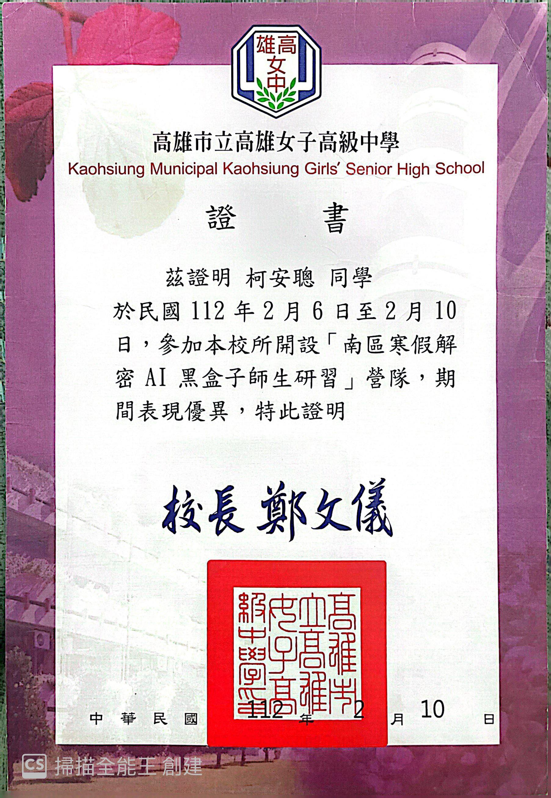

<!DOCTYPE html>
<html>
    <meta charset="UTF-8"></meta>
        <title>柯安聰_作品集</title>
</html>
<body style="background:  rgb(254, 249, 227);">
        <center>
<h1>左營高中_柯安聰_作品集</h1>
<h4> <四處奔波，看見不同的故事> </h4>

<h4> <一步一步地慢慢走向夢想> </h4>
    <hr>
<center>
    <h2>
      <a href = "總集作品.html">作品總集</a>
  

      <style>
        /* 定義圖片輪播的容器 */
        .slider {
          width: 600px;
          height: 400px;
          margin: 0 auto;
          position: relative;
          overflow: hidden;
        }
        
        /* 定義圖片的容器 */
        .slider-images {
          width: 2000%; /* 將寬度改為2000%，表示可以容納20張圖片 */
          height: 100%;
          display: flex;
          animation: slide 40s infinite; /* 將動畫持續時間改為40秒，表示每張圖片顯示2秒 */
        }
        
        /* 定義每張圖片的樣式 */
        .slider-images img {
          width: 5%; /* 將寬度改為5%，表示每張圖片佔5%的寬度 */
          height: auto;
        }
        
        
  @keyframes slide {
    0% {
      transform: translateX(0); /* 圖片從原點開始 */
      opacity: 0; /* 圖片透明度為0 */
    }
    2.5% {
      opacity: 1; /* 圖片透明度變為1，產生淡入效果 */
    }
    7.5% {
      transform: translateX(0); /* 圖片停留在原點 */
      opacity: 1; /* 圖片透明度為1 */
    }
    10% {
      transform: translateX(-5%); /* 圖片向左移動一個單位，即5%的距離 */
      opacity: 0; /* 圖片透明度變為0，產生淡出效果 */
    }
    12.5% {
      opacity: 1; /* 圖片透明度變為1，產生淡入效果 */
    }
    17.5% {
      transform: translateX(-5%); /* 圖片停留在左邊一個單位 */
      opacity: 1; /* 圖片透明度為1 */
    }
    20% {
      transform: translateX(-10%); /* 圖片向左移動兩個單位，即10%的距離 */
      opacity: 0; /* 圖片透明度變為0，產生淡出效果 */
    }
     /* 省略中間的部分，以此類推，每次移動和停留的比例都是5% */
    97.5% {
      opacity: 1; /* 圖片透明度變為1，產生淡入效果 */
    }
    100% {
      transform: translateX(-95%); /* 圖片停留在左邊19個單位，即95%的距離 */
      opacity: 1; /* 圖片透明度為1 */
      transform-origin: right; /* 設定旋轉中心點在右邊 */
      transform-style: preserve-3d; /* 設定保持3D效果 */
      animation-timing-function: ease-in-out; /* 設定動畫速度曲線 */
      animation-fill-mode: forwards; /* 設定動畫結束後保持最後一個影格的樣式 */
      animation-duration: .5s; /* 設定動畫持續時間 */
      animation-name: flip; /* 設定動畫名稱 */

      /*
        在最後一個影格時，圖片會旋轉180度，產生翻轉效果，
        然後再回到原點，重新開始動畫
      */

    }
  }

  /* 定義翻轉動畫的關鍵影格 */
  @keyframes flip {
     from {transform: rotateY(0deg);} 
     to {transform: rotateY(180deg);}
  }
</style>

<div class="slider">
    <div class="slider-images">
    
    
    
    
    
    
    
    
    
    
    
    
    
    
    
    
    
    
    
    


        </div>
        </div>

    </h2>
    </center>

<style>
  .box {
    width: 200px;
    height: 100px;
    background-color: lightblue;
    border: 5px solid black;
    padding: 10px;
    text-align: center;
    vertical-align: middle;
  }
</style>


    <link rel="stylesheet" href="style.css">
<div class="article">
    <div class="wrap">
        <div class="container">
<center>
          <div class="item">
            <h3>程式學習</h3>      
            
        <p><a href="左中.html">左營高中_APCS檢測衝刺班(點此查看作品)</a></p>
        </div>

            <div class="item">
                <h3>恐怖懸疑中篇小說</h3>
                
            <p><a href="陰廟關，鬼門開作品.html">陰廟關，鬼門開_2023台積電文學獎投稿作品(點此查看作品)</a></p>
            </div>

        <div class="item">
            <h3>議題文章</h3>
            
        <p><a href="有錢的低收入戶文章.html">「有錢的低收入戶？」偏見背後的貧困真相_方格子(點此查看作品)
        </a>
        </p>
    </div> 

        <div class="item">
            <h3>散文</h3>      
            
        <p><a href="貓與交響曲.html">貓的交響曲_方格子(點此查看作品)</a></p>
        
        </div>

        <div class="item">
            <h3>散文</h3>      
            
        <p><a href="平凡的人，非凡的夢.html">平凡的人，非凡的夢_方格子(點此查看作品)</a></p>
        </div> 

        <div class="item">
            <h3>散文</h3>      
            
        <p><a href="失落與救贖.html">失落與救贖_2023吳濁流文學獎投稿(點此查看作品)</a></p>
        </div>    

  
    <div class="item">
        <h3>散文</h3>      
        
    <p><a href="不被接受的清醒.html">不被接受的清醒_高雄青年文學獎投稿(點此查看作品)</a></p>
    </div> 
              
    <div class="item">
        <h3>散文</h3>      
        
    <p><a href="黎明世界.html">黎明世界_高雄青年文學獎投稿(點此查看作品)</a></p>
    </div> 

    <div class="item">
        <h3>童話</h3>      
        
    <p><a href="失去意義的畫筆.html">失去意義的畫筆_鍾肇政文學獎投稿(點此查看作品)</a></p>
    </div> 

    <div class="item">
        <h3>小品文</h3>      
        
    <p><a href="迎接黎明的歌謠.html">迎接黎明的歌謠_2023林榮三文學獎投稿(點此查看作品)</a></p>
    </div> 

    <div class="item">
        <h3>小品文</h3>      
        
    <p><a href="煙落紅塵.html">煙落紅塵_2023林榮三文學獎投稿(點此查看作品)</a></p>
    </div> 

    <div class="item">
        <h3>心靈短篇小說</h3>      
        
    <p><a href="墓之約.html">墓之約_第五十屆青年文學獎投稿(點此查看作品)</a></p>
    </div>

    


    <div class="item">
        <h3>敬老活動</h3>      
        
    <p><a href="祥和山莊.html">祥和山莊敬老活動(點此查看作品)</a></p>
    </div>  

    <div class="item">
        <h3>專題製作</h3>      
        
    <p><a href="宮崎駿.html">從宮崎駿的作品探討反戰議題(點此查看作品)</a></p>
    </div>

    <div class="item">
        <h3>程式學習</h3>      
        
        <h4>高雄女中_南區寒假解密AI黑盒子師生研習營隊</h4>
    </div>

    <div class="item">
    <h3>志工</h3>
    
<p>高雄市政府青年局國際志工團_聖功醫院志工</p>
</div>

<div class="item">
<h3>志工</h3>

<p>左營高中_衛生糾察</p>
</div> 
<div class="item">
<h3>議題探討</h3>      

<p>第二屆城市青年先鋒</p>


</div>


<div class="item">
<h3>APX數理能力競賽</h3>      

<p>第十二屆APX全國高中數理能力檢定</p>
</div>  
    
    </center>
       
            </div>
         </div>
       </div>
